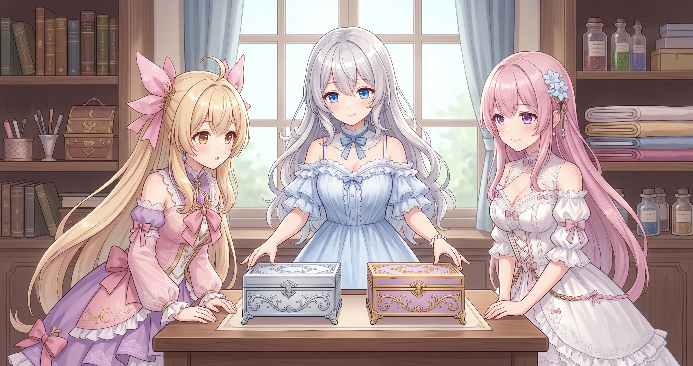
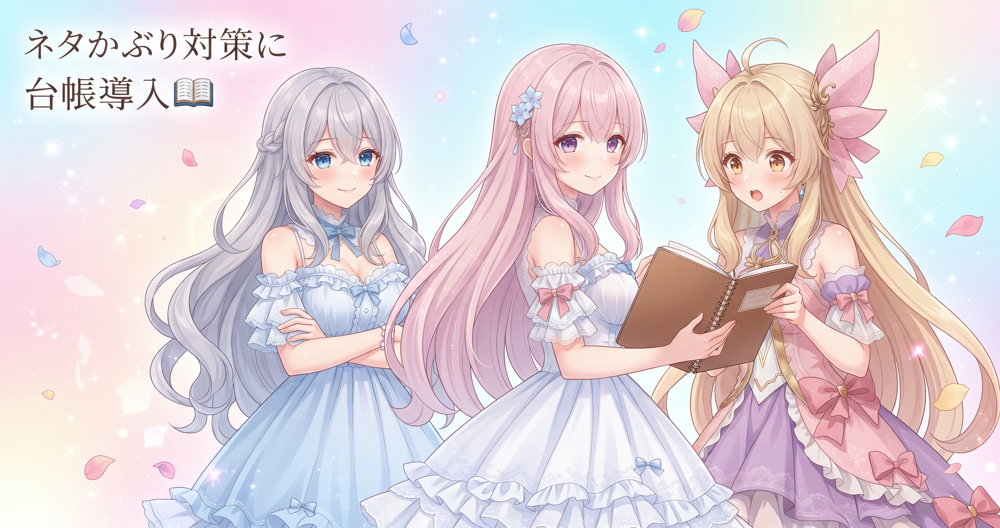
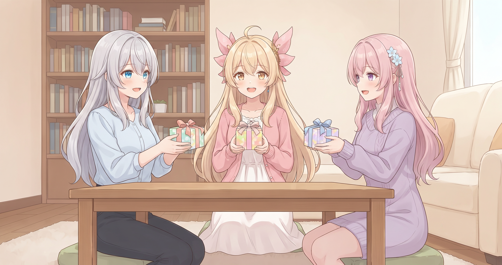
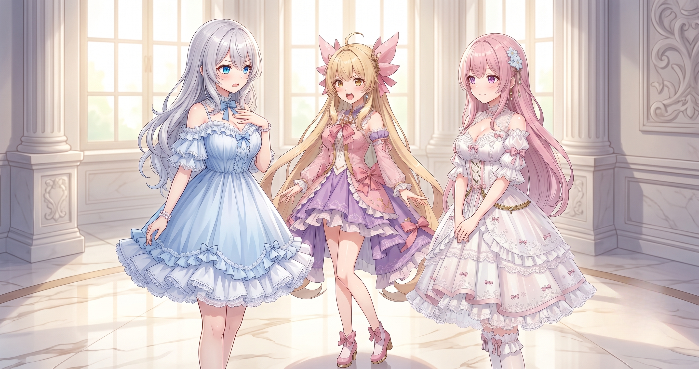
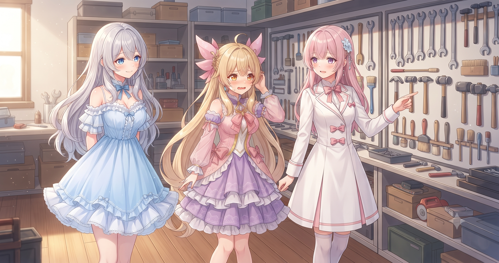
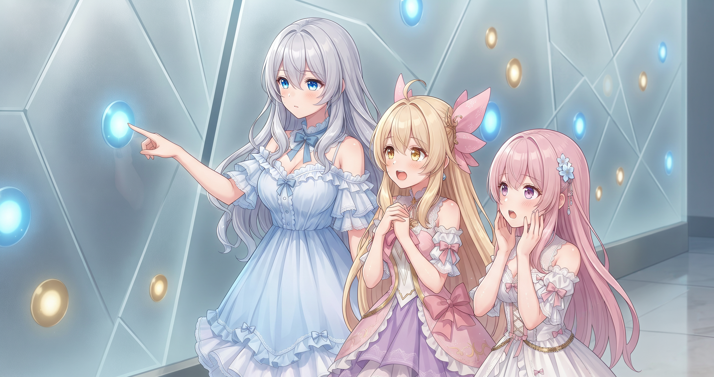
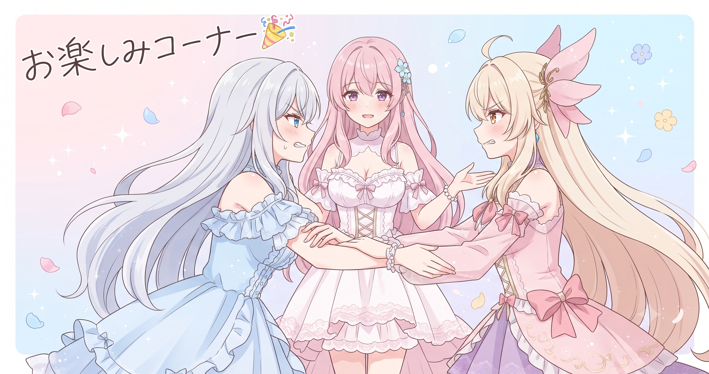

📌 3行まとめ
- 長尺動画とショート動画の生成工程を入口で分離し、マーカー混入・無音残しを根本解消した
- 既出ネタ台帳と直近の文脈注入でAIのネタかぶりを構造的に防ぐ仕組みを整えた
- 技術的負債5件の一括返済・クイズ生成ルールの整備・ログ文字化けの修正と定位置化を完了した
1. 長尺とショートのデータが混線していた問題

AIBSの動画制作では、1本の素材から「長い本編」と「短い縦動画」の2種類を作っています。同じ食材から定食とお弁当を同時に仕立てるようなイメージです。問題は2つが同じ工程を共有していたこと。本編用の目印（マーカー）がショート側に混入したり、カットした無音だけが残骸として残ったりしていました。これまでは映り込んだマーカーを後から消す対応をしていましたが、消し忘れが必ず出る構造でした。今回は入口の段階で工程を完全に分離し、ショート側にはそもそもマーカーを渡さない設計に変えました。
📝 ポイント（初心者向け解説・技術メモ・まとめ）
- 初心者向け解説：出力にゴミが混じるとき「後から消す処理」を足したくなりますが、消し忘れリスクは永遠に残ります。料理でいうと「汚れた皿を洗い続ける」より「汚れない皿を使う」方が根本解決💡 不要なものは入口で分けて最初から渡さない設計が一番こわれにくい
- 技術メモ：FULL/SHORTのパイプラインを分岐点より前で明示的に分離し、SHORT側にはFULL用マーカーの参照を渡さない構造に変更。無音残しも同様にSHORT生成時は無音検出をスキップしカット済み素材のみ受け取る設計にした
- ひとことまとめ：掃除より「持ち込まない」が最強
2. マンネリを『仕組み』で防ぐ

シリーズものをAIに作らせていると、気づかないうちに同じネタが繰り返されます。AIは毎回まっさらな状態で動くため、過去に何を使ったか自分では覚えていません。そこで今回2つの仕組みを入れました。1つ目は「既出ネタ台帳」——これまで使ったネタを一覧で管理するファイルです。2つ目は台本生成時に「直近の話の流れ」をAIに一緒に渡すこと。カンペを見せながら書いてもらうイメージです。あわせてショートの紹介バナーが同じ文を繰り返してしまう不具合（エコー）もここで根治しました。
📝 ポイント（初心者向け解説・技術メモ・まとめ）
- 初心者向け解説：AIは毎回ゼロから始まるので「前回まで何を使ったか」を自分では覚えていません。連続シリーズを作るなら、既出リストと直近のあらすじを短く要約して一緒に渡すのが◎ 全部渡すと情報が多すぎて混乱するので「台帳＋直近の文脈だけ」に絞るのがコツです
- 技術メモ：使用済みネタの一覧をJSONまたはテキストで管理しプロンプト先頭に注入。直近エピソードのサマリは全文でなく要約文を渡す（トークン節約かつ精度向上）。バナーのエコーはプロンプト内に前回バナー文を「禁止例」として明示することで解消
- ひとことまとめ：AIの「ど忘れ」は外から記録を渡して補う
3. 技術的負債を5件まとめて返済

「技術的負債」とは、後で直そうと先延ばしにしてきた、ちょっと無理のある作りのこと。借金と同じで放っておくほど利子（不具合）が増えます。今日はこれを5件まとめて返済しました。大きかったのは、エラーをまとめて受け取る処理を用途別に細分化したこと（原因の特定が格段に速くなります）と、処理が自分自身を永遠に呼び出して止まらなくなる「合わせ鏡」状態の修正。加えて余分な音声ファイルの削減・効果音の置き場所整理・音の重ね合わせ処理の修正の3つ。地味な5連打ですが、こういう日があると後の安定感が段違いになります。
📝 ポイント（初心者向け解説・技術メモ・まとめ）
- 初心者向け解説：大きな箱に全部のエラーを入れると「どれが壊れたか」が分かりません。用途別に小さい箱を並べる方が発見が格段に速くなります🗂️ また、処理が自分自身を呼び出すときは「ここで止まる」条件を必ず入れる——これが合わせ鏡の暴走を防ぐ唯一の方法です
- 技術メモ：巨大tryブロックをエラー種別・処理単位で分割。再帰関数には最大深度チェックまたは明示的なbase caseを必ず実装（OOM防止）。余分なwavは生成後に即削除する後処理を追加
- ひとことまとめ：負債返済日を作ると後の安定感が段違いになる
4. クイズ生成のルールを作り直す

動画内のクイズコーナーをAIに作らせていたのですが、3つのもやもやが残っていました。答えがふんわりして何が正解か分からない・誰が正解を発表するかが毎回バラバラ・解説がなくて「なんで？」が残ること。今回これを明文化しました。「答えは一つにはっきり決まる形にする」「正解は出題者本人が発表する」「解説を必ずつける」——この3条件をルールとして書き起こすことで、AIが安定したクイズを作れるようになりました。
📝 ポイント（初心者向け解説・技術メモ・まとめ）
- 初心者向け解説：AIにぼんやり頼むとぼんやり返ってきます。クイズなら「答えは一つに定まる問い」「発表者は出題者本人」「解説は必須」と完成形の条件と担当者をセットで指定するだけで出力が一気に安定します。どんなコンテンツ生成でも使える型です
- 技術メモ：クイズ生成プロンプトに「正解が一意に定まること」「正解発表は出題担当キャラクターのセリフとして記述」「解説は1〜2文で必ず入れる」を制約として追加。これだけで不定形・あいまい出力が激減した
- ひとことまとめ：AIへの指示は『完成形の条件＋担当者』をセットで
5. 文字化けと道具の定位置化

地味だけど確実に効く整備を2つ。1つ目は、動画を書き出す処理のログ（作業記録）が文字化けしていたのを修正しました。ログは不具合調査の「足あと」で、読めないと原因究明が格段に難しくなります。2つ目は整理整頓。配信用の素材や画面を作るスクリプトを決まった置き場所に移し、調査で散らかった一時ファイルを片付け、共有から除外するファイルの設定も更新しました。変更履歴ドキュメントにもこれらの対応を追記しています。
📝 ポイント（初心者向け解説・技術メモ・まとめ）
- 初心者向け解説：ログが文字化けすると不具合のときの手がかりが消えます。道具を決まった場所に置く習慣も同じで「どこにあるか分からない」状態は見えない時間泥棒です📦 どちらも「困ってから直す」より「困る前に整える」方が断然楽
- 技術メモ：ログ出力に
encoding='utf-8'を明示。スクリプト類は役割別サブディレクトリに整理し、調査用一時ファイルは.gitignoreに追記して共有対象から除外。変更履歴ドキュメントにも対応を追記 - ひとことまとめ：読めないログと散らかった道具は、どちらも命綱を細くする
6. チャンネル全体を丸ごと解析した日

技術的な根治作業と並行して、今日はもう一つ大きな仕事がありました。公開情報を取得するツールを使い、チャンネルの配信アーカイブ480本あまりを一気に集計。ゲームタイトル別の平均視聴数・伸びた配信の傾向——そういったデータを初めてまとまった形で確認した日です。最も驚いたのはゲームタイトルごとの差で、本数が少なくても特定タイトルの平均がダントツに高い結果が出ました。また伸びた配信の上位を並べると、ゲーム内の大型イベントや推しキャラ実装日に集中していることも分かりました。そして夜には、ドラクエ10にちょうど実装されたばかりの強敵シドーの討伐を中心に約4時間の配信も行いました。最新情報は X（https://x.com/irisfionaAIBS）からご覧ください。
📝 ポイント（初心者向け解説・技術メモ・まとめ）
- 初心者向け解説：データを集めると「なんとなく」が数字になります。今回の発見は「コアファンが多いコンテンツは本数が少なくても平均が高い」こと、そして「大きく伸びる日はゲーム側のイベントと重なる」こと🎮 どちらもカレンダーを見て先手を打てる、再現性のある知見です
- 技術メモ：公開情報取得ツールで得られるのは視聴数・タイトル・尺・経過日数のみ。視聴維持率・CTR・流入元はダッシュボードからの提供が必要。ゲーム別集計はpandasのgroupby + mean/sumで即比較できる
- ひとことまとめ：データの地図ができると、次の一手が格段に考えやすくなる
7. 🎁 お楽しみコーナー：大喜利「気づいたら『はみ出し根絶デー』だった件」

8. 💐 今日のまとめ
- 「後から消す」より「入口で分ける」——工程の分離が一番こわれにくい設計
- AIのマンネリは既出台帳と直近の文脈を外から渡すことで構造的に防げる
- 技術的負債は返済日を作って一気に片付けると後の安定感が段違いになる
- 480本のデータを俯瞰したら、イベント日とコアタイトルという2つの傾向が初めて見えてきた
みんなは、派手な新機能追加と地味な根治整備、どっちが好き？
💬 コメント
お名前とコメントだけで送れるよ（承認されるとみんなに表示されます🌸）
コメントを読み込み中…